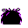

#048
Venonat
BugPoison
Lives in the shadows of tall trees where it eats insects. It is attracted by light at night
Base stats Total 250
HP60
Attack55
Defense50
Speed45
Special40
Details
- Species
- Insect
- Height
- 3'03"
- Weight
- 66.0 lb
- Catch rate
- 190
- Base exp
- 75
- Growth
- Medium Fast
Level-up moves
LevelMoveType
StartTackleNormal
StartDisableNormal
Lv 9Pin MissileBug
Lv 15PoisonpowderPoison
Lv 18Stun SporeGrass
Lv 22PsybeamPsychic
Lv 23Leech LifeBug
Lv 25Mega DrainGrass
Lv 31X ScissorBug
Evolution
Where to find
TM / HM
TM06 ToxicTM09 Take DownTM10 Double-EdgeTM21 Mega DrainTM22 SolarbeamTM29 PsychicTM31 MimicTM32 Double TeamTM33 ReflectTM34 BideTM39 SwiftTM40 Sludge BombTM44 RestTM46 PsywaveTM50 SubstituteHM05 Flash